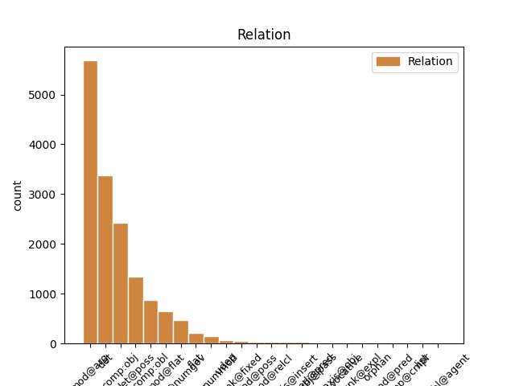
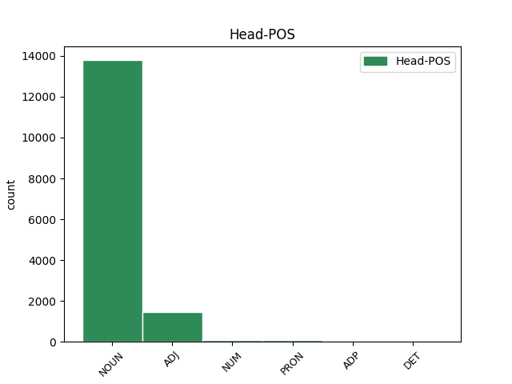
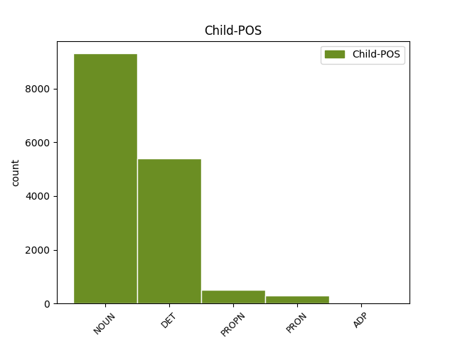

Distribution of features within this leaf



Agreement Rules sorted by frequency.
- When the dependent token is the determiner(det) of the head token, and the head token is NOUN and the dependent token is DET.
1 Wszyscy _ _ _ _ 0 _ _ _
2 podzielamy _ _ _ _ 0 _ _ _
3 tę ten DET adj:sg:acc:f:pos Case=Acc|Gender=Fem|Number=Sing|PronType=Dem 5 det _ _
4 samą _ _ _ _ 0 _ _ _
5 ideę idea NOUN subst:sg:acc:f Case=Acc|Gender=Fem|Number=Sing 0 _ _ _
6 : _ _ _ _ 0 _ _ _
7 mamy _ _ _ _ 0 _ _ _
8 swobodę _ _ _ _ 0 _ _ _
9 przepływu _ _ _ _ 0 _ _ _
10 orzeczeń _ _ _ _ 0 _ _ _
11 sądowych _ _ _ _ 0 _ _ _
12 . _ _ _ _ 0 _ _ _
1 Wszyscy _ _ _ _ 0 _ _ _
2 podzielamy _ _ _ _ 0 _ _ _
3 tę _ _ _ _ 0 _ _ _
4 samą _ _ _ _ 0 _ _ _
5 ideę _ _ _ _ 0 _ _ _
6 : _ _ _ _ 0 _ _ _
7 mamy _ _ _ _ 0 _ _ _
8 swobodę _ _ _ _ 0 _ _ _
9 przepływu przepływ NOUN subst:sg:gen:m3 Animacy=Inan|Case=Gen|Gender=Masc|Number=Sing 0 _ _ _
10 orzeczeń orzeczenie NOUN subst:pl:gen:n:ncol Case=Gen|Gender=Neut|Number=Plur 9 mod@arg _ _
11 sądowych _ _ _ _ 0 _ _ _
12 . _ _ _ _ 0 _ _ _
1 W _ _ _ _ 0 _ _ _
2 uzasadnieniu _ _ _ _ 0 _ _ _
3 swojego _ _ _ _ 0 _ _ _
4 wniosku _ _ _ _ 0 _ _ _
5 o _ _ _ _ 0 _ _ _
6 udzielenie _ _ _ _ 0 _ _ _
7 azylu _ _ _ _ 0 _ _ _
8 podał _ _ _ _ 0 _ _ _
9 , _ _ _ _ 0 _ _ _
10 że _ _ _ _ 0 _ _ _
11 na _ _ _ _ 0 _ _ _
12 skutek _ _ _ _ 0 _ _ _
13 rozpaczy _ _ _ _ 0 _ _ _
14 z _ _ _ _ 0 _ _ _
15 powodu _ _ _ _ 0 _ _ _
16 pozbawienia _ _ _ _ 0 _ _ _
17 wolności _ _ _ _ 0 _ _ _
18 swojego swój DET adj:sg:gen:m1:pos Animacy=Hum|Case=Gen|Gender=Masc|Number=Sing|Poss=Yes|PronType=Prs|Reflex=Yes 19 det@poss _ _
19 brata brat NOUN subst:sg:gen:m1 Animacy=Hum|Case=Gen|Gender=Masc|Number=Sing 0 _ _ _
20 zasztyletował _ _ _ _ 0 _ _ _
21 członka _ _ _ _ 0 _ _ _
22 partii _ _ _ _ 0 _ _ _
23 Baath _ _ _ _ 0 _ _ _
24 . _ _ _ _ 0 _ _ _
1 Zachowamy _ _ _ _ 0 _ _ _
2 szeroką _ _ _ _ 0 _ _ _
3 definicję _ _ _ _ 0 _ _ _
4 , _ _ _ _ 0 _ _ _
5 ale _ _ _ _ 0 _ _ _
6 ograniczymy _ _ _ _ 0 _ _ _
7 swobodę _ _ _ _ 0 _ _ _
8 odmowy _ _ _ _ 0 _ _ _
9 udostępniania udostępniać NOUN ger:sg:gen:n:imperf:aff Aspect=Imp|Case=Gen|Gender=Neut|Number=Sing|Polarity=Pos|VerbForm=Vnoun 0 _ _ _
10 dokumentów dokument NOUN subst:pl:gen:m3 Animacy=Inan|Case=Gen|Gender=Masc|Number=Plur 9 comp:obj _ SpaceAfter=No
11 . _ _ _ _ 0 _ _ _
1 odnawiająca _ _ _ _ 0 _ _ _
2 kadencję _ _ _ _ 0 _ _ _
3 Zarządu _ _ _ _ 0 _ _ _
4 Europejskiego _ _ _ _ 0 _ _ _
5 Centrum _ _ _ _ 0 _ _ _
6 Rozwoju rozwój NOUN subst:sg:gen:m3 Animacy=Inan|Case=Gen|Gender=Masc|Number=Sing 0 _ _ _
7 Kształcenia kształcenie NOUN subst:sg:gen:n:ncol Case=Gen|Gender=Neut|Number=Sing 6 mod@flat _ _
8 Zawodowego _ _ _ _ 0 _ _ _
1 Głosowanie _ _ _ _ 0 _ _ _
2 odbędzie _ _ _ _ 0 _ _ _
3 się _ _ _ _ 0 _ _ _
4 w _ _ _ _ 0 _ _ _
5 piątek _ _ _ _ 0 _ _ _
6 24 24 ADJ adj:sg:gen:m3:pos Animacy=Inan|Case=Gen|Degree=Pos|Gender=Masc|Number=Sing|NumForm=Digit|NumType=Ord 0 _ _ _
7 kwietnia kwiecień NOUN subst:sg:gen:m3 Animacy=Inan|Case=Gen|Gender=Masc|Number=Sing 6 mod@flat _ _
8 2009 _ _ _ _ 0 _ _ _
9 r _ _ _ _ 0 _ _ _
10 . _ _ _ _ 0 _ _ _
1 Rezultaty _ _ _ _ 0 _ _ _
2 UGW _ _ _ _ 0 _ _ _
3 powinny _ _ _ _ 0 _ _ _
4 być _ _ _ _ 0 _ _ _
5 oceniane _ _ _ _ 0 _ _ _
6 również _ _ _ _ 0 _ _ _
7 z _ _ _ _ 0 _ _ _
8 punktu _ _ _ _ 0 _ _ _
9 widzenia _ _ _ _ 0 _ _ _
10 polityki _ _ _ _ 0 _ _ _
11 wspólnych _ _ _ _ 0 _ _ _
12 stóp _ _ _ _ 0 _ _ _
13 procentowych _ _ _ _ 0 _ _ _
14 , _ _ _ _ 0 _ _ _
15 które _ _ _ _ 0 _ _ _
16 w _ _ _ _ 0 _ _ _
17 wielu wiele DET num:pl:loc:m3:congr Animacy=Inan|Case=Loc|Gender=Masc|Number=Plur|NumType=Card|PronType=Ind 18 det@nummod _ _
18 krajach kraj NOUN subst:pl:loc:m3 Animacy=Inan|Case=Loc|Gender=Masc|Number=Plur 0 _ _ _
19 skutkowały _ _ _ _ 0 _ _ _
20 wzrostem _ _ _ _ 0 _ _ _
21 cen _ _ _ _ 0 _ _ _
22 na _ _ _ _ 0 _ _ _
23 rynku _ _ _ _ 0 _ _ _
24 nieruchomości _ _ _ _ 0 _ _ _
1 Frank _ _ _ _ 0 _ _ _
2 wyszedł _ _ _ _ 0 _ _ _
3 z _ _ _ _ 0 _ _ _
4 namiotu _ _ _ _ 0 _ _ _
5 z _ _ _ _ 0 _ _ _
6 okiem _ _ _ _ 0 _ _ _
7 zalepionym zalepić ADJ ppas:sg:inst:n:perf:aff Aspect=Perf|Case=Ins|Gender=Neut|Number=Sing|Polarity=Pos|VerbForm=Part|Voice=Pass 0 _ _ _
8 plastrem plaster NOUN subst:sg:inst:m3 Animacy=Inan|Case=Ins|Gender=Masc|Number=Sing 7 comp:obl _ SpaceAfter=No
9 , _ _ _ _ 0 _ _ _
10 przykładając _ _ _ _ 0 _ _ _
11 chusteczkę _ _ _ _ 0 _ _ _
12 do _ _ _ _ 0 _ _ _
13 skaleczonej _ _ _ _ 0 _ _ _
14 wargi _ _ _ _ 0 _ _ _
15 . _ _ _ _ 0 _ _ _
1 Mogą _ _ _ _ 0 _ _ _
2 wystąpić _ _ _ _ 0 _ _ _
3 pewne _ _ _ _ 0 _ _ _
4 drobne _ _ _ _ 0 _ _ _
5 rozbieżności _ _ _ _ 0 _ _ _
6 , _ _ _ _ 0 _ _ _
7 ponieważ _ _ _ _ 0 _ _ _
8 statystyka _ _ _ _ 0 _ _ _
9 emisji _ _ _ _ 0 _ _ _
10 papierów _ _ _ _ 0 _ _ _
11 wartościowych _ _ _ _ 0 _ _ _
12 i _ _ _ _ 0 _ _ _
13 statystyka statystyka NOUN subst:sg:nom:f Case=Nom|Gender=Fem|Number=Sing 0 _ _ _
14 bilansowa _ _ _ _ 0 _ _ _
15 MIF MIF PROPN subst:sg:nom:f Case=Nom|Gender=Fem|Number=Sing 13 flat _ _
16 pochodzą _ _ _ _ 0 _ _ _
17 z _ _ _ _ 0 _ _ _
18 krajowych _ _ _ _ 0 _ _ _
19 systemów _ _ _ _ 0 _ _ _
20 sprawozdawczych _ _ _ _ 0 _ _ _
21 przeznaczonych _ _ _ _ 0 _ _ _
22 do _ _ _ _ 0 _ _ _
23 różnych _ _ _ _ 0 _ _ _
24 celów _ _ _ _ 0 _ _ _
25 . _ _ _ _ 0 _ _ _
1 Przeprowadzili _ _ _ _ 0 _ _ _
2 śmy _ _ _ _ 0 _ _ _
3 dyskusję _ _ _ _ 0 _ _ _
4 na _ _ _ _ 0 _ _ _
5 temat _ _ _ _ 0 _ _ _
6 koordynatora koordynator NOUN subst:sg:gen:m1 Animacy=Hum|Case=Gen|Gender=Masc|Number=Sing 0 _ _ _
7 UE UE PROPN subst:sg:gen:f Case=Gen|Gender=Fem|Number=Sing 6 mod@arg _ _
8 ds _ _ _ _ 0 _ _ _
9 . _ _ _ _ 0 _ _ _
10 zwalczania _ _ _ _ 0 _ _ _
11 terroryzmu _ _ _ _ 0 _ _ _
12 . _ _ _ _ 0 _ _ _
1 W _ _ _ _ 0 _ _ _
2 zależności _ _ _ _ 0 _ _ _
3 od _ _ _ _ 0 _ _ _
4 rozwoju _ _ _ _ 0 _ _ _
5 przestępczości _ _ _ _ 0 _ _ _
6 Rada _ _ _ _ 0 _ _ _
7 może _ _ _ _ 0 _ _ _
8 przyjąć _ _ _ _ 0 _ _ _
9 decyzję _ _ _ _ 0 _ _ _
10 określającą _ _ _ _ 0 _ _ _
11 inne _ _ _ _ 0 _ _ _
12 dziedziny _ _ _ _ 0 _ _ _
13 przestępczości _ _ _ _ 0 _ _ _
14 spełniające spełniać ADJ pact:pl:acc:f:imperf:aff Aspect=Imp|Case=Acc|Gender=Fem|Number=Plur|Polarity=Pos|VerbForm=Part|Voice=Act 0 _ _ _
15 kryteria kryterium NOUN subst:pl:acc:n:ncol Case=Acc|Gender=Neut|Number=Plur 14 comp:obj _ SpaceAfter=No
16 , _ _ _ _ 0 _ _ _
17 o _ _ _ _ 0 _ _ _
18 których _ _ _ _ 0 _ _ _
19 mowa _ _ _ _ 0 _ _ _
20 w _ _ _ _ 0 _ _ _
21 niniejszym _ _ _ _ 0 _ _ _
22 ustępie _ _ _ _ 0 _ _ _
23 . _ _ _ _ 0 _ _ _
1 I _ _ _ _ 0 _ _ _
2 wplata _ _ _ _ 0 _ _ _
3 się _ _ _ _ 0 _ _ _
4 w _ _ _ _ 0 _ _ _
5 to ten DET adj:sg:acc:n:pos Case=Acc|Gender=Neut|Number=Sing|PronType=Dem 6 det _ _
6 wszystko wszystko PRON subst:sg:acc:n:ncol Case=Acc|Gender=Neut|Number=Sing|PronType=Tot 0 _ _ _
7 uwielbienie _ _ _ _ 0 _ _ _
8 dla _ _ _ _ 0 _ _ _
9 technologii _ _ _ _ 0 _ _ _
10 Pentagonu _ _ _ _ 0 _ _ _
11 . _ _ _ _ 0 _ _ _
1 - _ _ _ _ 0 _ _ _
2 w _ _ _ _ 0 _ _ _
3 rzeźniach _ _ _ _ 0 _ _ _
4 , _ _ _ _ 0 _ _ _
5 w _ _ _ _ 0 _ _ _
6 których _ _ _ _ 0 _ _ _
7 dokonuje _ _ _ _ 0 _ _ _
8 się _ _ _ _ 0 _ _ _
9 tylko _ _ _ _ 0 _ _ _
10 uboju _ _ _ _ 0 _ _ _
11 świń _ _ _ _ 0 _ _ _
12 urodzonych _ _ _ _ 0 _ _ _
13 i _ _ _ _ 0 _ _ _
14 tuczonych _ _ _ _ 0 _ _ _
15 we _ _ _ _ 0 _ _ _
16 własnych _ _ _ _ 0 _ _ _
17 zakładach _ _ _ _ 0 _ _ _
18 hodowlanych _ _ _ _ 0 _ _ _
19 i _ _ _ _ 0 _ _ _
20 które który DET adj:pl:nom:f:pos Case=Nom|Gender=Fem|Number=Plur|PronType=Rel 21 det _ _
21 same sam ADJ adj:pl:nom:f:pos Case=Nom|Degree=Pos|Gender=Fem|Number=Plur 0 _ _ _
22 zajmują _ _ _ _ 0 _ _ _
23 się _ _ _ _ 0 _ _ _
24 rozbiorem _ _ _ _ 0 _ _ _
25 wszystkich _ _ _ _ 0 _ _ _
26 uzyskanych _ _ _ _ 0 _ _ _
27 tusz _ _ _ _ 0 _ _ _
28 . _ _ _ _ 0 _ _ _
1 Jeżeli _ _ _ _ 0 _ _ _
2 ich _ _ _ _ 0 _ _ _
3 produkty _ _ _ _ 0 _ _ _
4 nie _ _ _ _ 0 _ _ _
5 są _ _ _ _ 0 _ _ _
6 dostosowane _ _ _ _ 0 _ _ _
7 do _ _ _ _ 0 _ _ _
8 dziedziny _ _ _ _ 0 _ _ _
9 niezharmonizowanej _ _ _ _ 0 _ _ _
10 , _ _ _ _ 0 _ _ _
11 muszą _ _ _ _ 0 _ _ _
12 zrezygnować _ _ _ _ 0 _ _ _
13 z _ _ _ _ 0 _ _ _
14 ich on PRON ppron3:pl:gen:m3:ter:akc:npraep Animacy=Inan|Case=Gen|Gender=Masc|Number=Plur|Person=3|PrepCase=Npr|PronType=Prs|Variant=Long 15 comp:obj _ _
15 eksportowania eksportować NOUN ger:sg:gen:n:imperf:aff Aspect=Imp|Case=Gen|Gender=Neut|Number=Sing|Polarity=Pos|VerbForm=Vnoun 0 _ _ _
16 . _ _ _ _ 0 _ _ _
1 Rezultaty _ _ _ _ 0 _ _ _
2 UGW _ _ _ _ 0 _ _ _
3 powinny _ _ _ _ 0 _ _ _
4 być _ _ _ _ 0 _ _ _
5 oceniane _ _ _ _ 0 _ _ _
6 również _ _ _ _ 0 _ _ _
7 z _ _ _ _ 0 _ _ _
8 punktu punkt NOUN subst:sg:gen:m3 Animacy=Inan|Case=Gen|Gender=Masc|Number=Sing 0 _ _ _
9 widzenia widzenie NOUN subst:sg:gen:n:ncol Case=Gen|Gender=Neut|Number=Sing 8 unk@fixed _ _
10 polityki _ _ _ _ 0 _ _ _
11 wspólnych _ _ _ _ 0 _ _ _
12 stóp _ _ _ _ 0 _ _ _
13 procentowych _ _ _ _ 0 _ _ _
14 , _ _ _ _ 0 _ _ _
15 które _ _ _ _ 0 _ _ _
16 w _ _ _ _ 0 _ _ _
17 wielu _ _ _ _ 0 _ _ _
18 krajach _ _ _ _ 0 _ _ _
19 skutkowały _ _ _ _ 0 _ _ _
20 wzrostem _ _ _ _ 0 _ _ _
21 cen _ _ _ _ 0 _ _ _
22 na _ _ _ _ 0 _ _ _
23 rynku _ _ _ _ 0 _ _ _
24 nieruchomości _ _ _ _ 0 _ _ _
1 Rzeczywiście _ _ _ _ 0 _ _ _
2 , _ _ _ _ 0 _ _ _
3 chińska _ _ _ _ 0 _ _ _
4 zdolność _ _ _ _ 0 _ _ _
5 produkcyjna _ _ _ _ 0 _ _ _
6 wzrosła _ _ _ _ 0 _ _ _
7 z _ _ _ _ 0 _ _ _
8 1,9 _ _ _ _ 0 _ _ _
9 miliona _ _ _ _ 0 _ _ _
10 ton _ _ _ _ 0 _ _ _
11 w _ _ _ _ 0 _ _ _
12 1993 _ _ _ _ 0 _ _ _
13 r _ _ _ _ 0 _ _ _
14 . _ _ _ _ 0 _ _ _
15 do _ _ _ _ 0 _ _ _
16 2,4 2,4 NUM num:sg:gen:m3:rec Animacy=Inan|Case=Gen|Gender=Masc|Number=Sing|NumForm=Digit|NumType=Card 0 _ _ _
17 miliona milion NOUN subst:sg:gen:m3 Animacy=Inan|Case=Gen|Gender=Masc|Number=Sing 16 flat _ _
18 ton _ _ _ _ 0 _ _ _
19 w _ _ _ _ 0 _ _ _
20 1998 _ _ _ _ 0 _ _ _
21 r _ _ _ _ 0 _ _ _
22 . _ _ _ _ 0 _ _ _
1 Również _ _ _ _ 0 _ _ _
2 Republika _ _ _ _ 0 _ _ _
3 Federalna _ _ _ _ 0 _ _ _
4 Niemiec _ _ _ _ 0 _ _ _
5 przedstawiła _ _ _ _ 0 _ _ _
6 na _ _ _ _ 0 _ _ _
7 swą _ _ _ _ 0 _ _ _
8 obronę _ _ _ _ 0 _ _ _
9 , _ _ _ _ 0 _ _ _
10 zarówno _ _ _ _ 0 _ _ _
11 w _ _ _ _ 0 _ _ _
12 ramach _ _ _ _ 0 _ _ _
13 postępowania _ _ _ _ 0 _ _ _
14 poprzedzającego _ _ _ _ 0 _ _ _
15 wniesienie _ _ _ _ 0 _ _ _
16 skargi _ _ _ _ 0 _ _ _
17 , _ _ _ _ 0 _ _ _
18 jak _ _ _ _ 0 _ _ _
19 również _ _ _ _ 0 _ _ _
20 w _ _ _ _ 0 _ _ _
21 niniejszym _ _ _ _ 0 _ _ _
22 postępowaniu _ _ _ _ 0 _ _ _
23 , _ _ _ _ 0 _ _ _
24 argumenty _ _ _ _ 0 _ _ _
25 dotyczące _ _ _ _ 0 _ _ _
26 tych ten DET adj:pl:gen:n:pos Case=Gen|Gender=Neut|Number=Plur|PronType=Dem 27 det _ _
27 dwóch dwa NUM num:pl:gen:n:congr:ncol Case=Gen|Gender=Neut|Number=Plur|NumForm=Word 0 _ _ _
28 pojęć _ _ _ _ 0 _ _ _
29 . _ _ _ _ 0 _ _ _
1 W _ _ _ _ 0 _ _ _
2 uzasadnieniu _ _ _ _ 0 _ _ _
3 swojego _ _ _ _ 0 _ _ _
4 wniosku _ _ _ _ 0 _ _ _
5 o _ _ _ _ 0 _ _ _
6 udzielenie _ _ _ _ 0 _ _ _
7 azylu _ _ _ _ 0 _ _ _
8 podał _ _ _ _ 0 _ _ _
9 , _ _ _ _ 0 _ _ _
10 że _ _ _ _ 0 _ _ _
11 na _ _ _ _ 0 _ _ _
12 skutek _ _ _ _ 0 _ _ _
13 rozpaczy _ _ _ _ 0 _ _ _
14 z _ _ _ _ 0 _ _ _
15 powodu _ _ _ _ 0 _ _ _
16 pozbawienia pozbawić NOUN ger:sg:gen:n:perf:aff Aspect=Perf|Case=Gen|Gender=Neut|Number=Sing|Polarity=Pos|VerbForm=Vnoun 0 _ _ _
17 wolności wolność NOUN subst:sg:gen:f Case=Gen|Gender=Fem|Number=Sing 16 comp:obl _ _
18 swojego _ _ _ _ 0 _ _ _
19 brata _ _ _ _ 0 _ _ _
20 zasztyletował _ _ _ _ 0 _ _ _
21 członka _ _ _ _ 0 _ _ _
22 partii _ _ _ _ 0 _ _ _
23 Baath _ _ _ _ 0 _ _ _
24 . _ _ _ _ 0 _ _ _
1 Jako _ _ _ _ 0 _ _ _
2 na _ _ _ _ 0 _ _ _
3 osobie _ _ _ _ 0 _ _ _
4 , _ _ _ _ 0 _ _ _
5 a _ _ _ _ 0 _ _ _
6 nie _ _ _ _ 0 _ _ _
7 tylko _ _ _ _ 0 _ _ _
8 jak _ _ _ _ 0 _ _ _
9 na _ _ _ _ 0 _ _ _
10 dziewczynie _ _ _ _ 0 _ _ _
11 z _ _ _ _ 0 _ _ _
12 którą _ _ _ _ 0 _ _ _
13 kochał _ _ _ _ 0 _ _ _
14 em _ _ _ _ 0 _ _ _
15 się _ _ _ _ 0 _ _ _
16 cztery _ _ _ _ 0 _ _ _
17 minuty minuta NOUN subst:pl:acc:f Case=Acc|Gender=Fem|Number=Plur 18 comp:obj _ _
18 temu temu ADP prep:acc AdpType=Post|Case=Acc 0 _ _ _
19 . _ _ _ _ 0 _ _ _
1 Zobowiązały _ _ _ _ 0 _ _ _
2 się _ _ _ _ 0 _ _ _
3 one _ _ _ _ 0 _ _ _
4 do _ _ _ _ 0 _ _ _
5 przedstawienia _ _ _ _ 0 _ _ _
6 swoich _ _ _ _ 0 _ _ _
7 programów _ _ _ _ 0 _ _ _
8 konwergencji _ _ _ _ 0 _ _ _
9 do _ _ _ _ 0 _ _ _
10 15 _ _ _ _ 0 _ _ _
11 maja _ _ _ _ 0 _ _ _
12 2004 _ _ _ _ 0 _ _ _
13 r _ _ _ _ 0 _ _ _
14 . _ _ _ _ 0 _ _ _
15 oraz _ _ _ _ 0 _ _ _
16 ich on PRON ppron3:pl:gen:m3:ter:akc:npraep Animacy=Inan|Case=Gen|Gender=Masc|Number=Plur|Person=3|PrepCase=Npr|PronType=Prs|Variant=Long 18 mod@arg _ _
17 pierwszej _ _ _ _ 0 _ _ _
18 aktualizacji aktualizacja NOUN subst:sg:gen:f Case=Gen|Gender=Fem|Number=Sing 0 _ _ _
19 pod _ _ _ _ 0 _ _ _
20 koniec _ _ _ _ 0 _ _ _
21 2004 _ _ _ _ 0 _ _ _
22 r _ _ _ _ 0 _ _ _
23 . _ _ _ _ 0 _ _ _
1 Jednak _ _ _ _ 0 _ _ _
2 nasza _ _ _ _ 0 _ _ _
3 wrażliwość _ _ _ _ 0 _ _ _
4 wzmaga _ _ _ _ 0 _ _ _
5 się _ _ _ _ 0 _ _ _
6 jeszcze _ _ _ _ 0 _ _ _
7 , _ _ _ _ 0 _ _ _
8 kiedy _ _ _ _ 0 _ _ _
9 stykamy _ _ _ _ 0 _ _ _
10 się _ _ _ _ 0 _ _ _
11 z _ _ _ _ 0 _ _ _
12 cierpieniem _ _ _ _ 0 _ _ _
13 istot _ _ _ _ 0 _ _ _
14 ludzkich _ _ _ _ 0 _ _ _
15 powodowanym powodować ADJ ppas:sg:inst:n:imperf:aff Aspect=Imp|Case=Ins|Gender=Neut|Number=Sing|Polarity=Pos|VerbForm=Part|Voice=Pass 0 _ _ _
16 wypadkami wypadek NOUN subst:pl:inst:m3 Animacy=Inan|Case=Ins|Gender=Masc|Number=Plur 15 udep _ SpaceAfter=No
17 , _ _ _ _ 0 _ _ _
18 wojną _ _ _ _ 0 _ _ _
19 lub _ _ _ _ 0 _ _ _
20 chorobą _ _ _ _ 0 _ _ _
21 . _ _ _ _ 0 _ _ _
1 Część _ _ _ _ 0 _ _ _
2 obcego _ _ _ _ 0 _ _ _
3 związku _ _ _ _ 0 _ _ _
4 została _ _ _ _ 0 _ _ _
5 wydalona _ _ _ _ 0 _ _ _
6 z _ _ _ _ 0 _ _ _
7 moczem _ _ _ _ 0 _ _ _
8 , _ _ _ _ 0 _ _ _
9 część część NOUN subst:sg:nom:f Case=Nom|Gender=Fem|Number=Sing 10 subj@pass _ _
10 rozłożona rozłożyć ADJ ppas:sg:nom:f:perf:aff Aspect=Perf|Case=Nom|Gender=Fem|Number=Sing|Polarity=Pos|VerbForm=Part|Voice=Pass 0 _ _ _
11 , _ _ _ _ 0 _ _ _
12 ale _ _ _ _ 0 _ _ _
13 - _ _ _ _ 0 _ _ _
14 jak _ _ _ _ 0 _ _ _
15 wykazały _ _ _ _ 0 _ _ _
16 analizy _ _ _ _ 0 _ _ _
17 - _ _ _ _ 0 _ _ _
18 część _ _ _ _ 0 _ _ _
19 wbudowała _ _ _ _ 0 _ _ _
20 się _ _ _ _ 0 _ _ _
21 w _ _ _ _ 0 _ _ _
22 tkanki _ _ _ _ 0 _ _ _
23 człowieka _ _ _ _ 0 _ _ _
24 . _ _ _ _ 0 _ _ _
1 - _ _ _ _ 0 _ _ _
2 zajęcia zajęcie NOUN subst:pl:nom:n:ncol Case=Nom|Gender=Neut|Number=Plur 0 _ _ _
3 kulturalne _ _ _ _ 0 _ _ _
4 ( _ _ _ _ 0 _ _ _
5 opłaty opłata NOUN subst:pl:nom:f Case=Nom|Gender=Fem|Number=Plur 2 parataxis@insert _ _
6 za _ _ _ _ 0 _ _ _
7 wstęp _ _ _ _ 0 _ _ _
8 , _ _ _ _ 0 _ _ _
9 łącznie _ _ _ _ 0 _ _ _
10 z _ _ _ _ 0 _ _ _
11 biletami _ _ _ _ 0 _ _ _
12 zakupionymi _ _ _ _ 0 _ _ _
13 w _ _ _ _ 0 _ _ _
14 przedsprzedaży _ _ _ _ 0 _ _ _
15 ) _ _ _ _ 0 _ _ _
16 , _ _ _ _ 0 _ _ _
1 Warunki _ _ _ _ 0 _ _ _
2 przyznania przyznać NOUN ger:sg:gen:n:perf:aff Aspect=Perf|Case=Gen|Gender=Neut|Number=Sing|Polarity=Pos|VerbForm=Vnoun 0 _ _ _
3 GSP GSP PROPN subst:sg:gen:m3 Animacy=Inan|Case=Gen|Gender=Masc|Number=Sing 2 comp:obj _ _
4 Plus _ _ _ _ 0 _ _ _
5 Sri _ _ _ _ 0 _ _ _
6 Lance _ _ _ _ 0 _ _ _
7 oparte _ _ _ _ 0 _ _ _
8 są _ _ _ _ 0 _ _ _
9 przede _ _ _ _ 0 _ _ _
10 wszystkim _ _ _ _ 0 _ _ _
11 na _ _ _ _ 0 _ _ _
12 kryteriach _ _ _ _ 0 _ _ _
13 niepewnej _ _ _ _ 0 _ _ _
14 sytuacji _ _ _ _ 0 _ _ _
15 gospodarczej _ _ _ _ 0 _ _ _
16 oraz _ _ _ _ 0 _ _ _
17 na _ _ _ _ 0 _ _ _
18 fakcie _ _ _ _ 0 _ _ _
19 , _ _ _ _ 0 _ _ _
20 iż _ _ _ _ 0 _ _ _
21 wspomniane _ _ _ _ 0 _ _ _
22 przeze _ _ _ _ 0 _ _ _
23 mnie _ _ _ _ 0 _ _ _
24 międzynarodowe _ _ _ _ 0 _ _ _
25 konwencje _ _ _ _ 0 _ _ _
26 dotyczące _ _ _ _ 0 _ _ _
27 podstawowych _ _ _ _ 0 _ _ _
28 praw _ _ _ _ 0 _ _ _
29 muszą _ _ _ _ 0 _ _ _
30 zostać _ _ _ _ 0 _ _ _
31 wprowadzone _ _ _ _ 0 _ _ _
32 w _ _ _ _ 0 _ _ _
33 życie _ _ _ _ 0 _ _ _
34 . _ _ _ _ 0 _ _ _
1 Nazwa nazwa NOUN subst:sg:nom:f Case=Nom|Gender=Fem|Number=Sing 0 _ _ _
2 : _ _ _ _ 0 _ _ _
3 Podział podział NOUN subst:sg:nom:m3 Animacy=Inan|Case=Nom|Gender=Masc|Number=Sing 1 parataxis@obj _ _
4 geograficzny _ _ _ _ 0 _ _ _
5 całkowitej _ _ _ _ 0 _ _ _
6 liczby _ _ _ _ 0 _ _ _
7 oddziałów _ _ _ _ 0 _ _ _
8 w _ _ _ _ 0 _ _ _
9 EOG _ _ _ _ 0 _ _ _
1 Wpisy wpis NOUN subst:pl:nom:m3 Animacy=Inan|Case=Nom|Gender=Masc|Number=Plur 0 _ _ _
2 , _ _ _ _ 0 _ _ _
3 o _ _ _ _ 0 _ _ _
4 których _ _ _ _ 0 _ _ _
5 mowa mowa NOUN subst:sg:nom:f Case=Nom|Gender=Fem|Number=Sing 1 mod@relcl _ _
6 w _ _ _ _ 0 _ _ _
7 art _ _ _ _ 0 _ _ _
8 . _ _ _ _ 0 _ _ _
9 4 _ _ _ _ 0 _ _ _
10 lit _ _ _ _ 0 _ _ _
11 . _ _ _ _ 0 _ _ _
12 d _ _ _ _ 0 _ _ _
13 ) _ _ _ _ 0 _ _ _
1 Przetworzona _ _ _ _ 0 _ _ _
2 żywność _ _ _ _ 0 _ _ _
3 na _ _ _ _ 0 _ _ _
4 bazie _ _ _ _ 0 _ _ _
5 zbóż _ _ _ _ 0 _ _ _
6 jest _ _ _ _ 0 _ _ _
7 przygotowana _ _ _ _ 0 _ _ _
8 przede _ _ _ _ 0 _ _ _
9 wszystkim _ _ _ _ 0 _ _ _
10 z _ _ _ _ 0 _ _ _
11 jednego _ _ _ _ 0 _ _ _
12 lub _ _ _ _ 0 _ _ _
13 więcej więcej DET num:pl:gen:n:rec Case=Gen|Gender=Neut|Number=Plur|NumType=Card|PronType=Ind 15 det@numgov _ _
14 zmielonych _ _ _ _ 0 _ _ _
15 zbóż zboże NOUN subst:pl:gen:n:ncol Case=Gen|Gender=Neut|Number=Plur 0 _ _ _
16 i/lub _ _ _ _ 0 _ _ _
17 podstawowych _ _ _ _ 0 _ _ _
18 produktów _ _ _ _ 0 _ _ _
19 skrobiowych _ _ _ _ 0 _ _ _
20 . _ _ _ _ 0 _ _ _
1 Przecież _ _ _ _ 0 _ _ _
2 te ten DET adj:pl:acc:m3:pos Animacy=Inan|Case=Acc|Gender=Masc|Number=Plur|PronType=Dem 3 det _ _
3 kilkaset kilkaset DET num:pl:acc:m3:rec Animacy=Inan|Case=Acc|Gender=Masc|Number=Plur|NumType=Card|PronType=Ind 0 _ _ _
4 głosów _ _ _ _ 0 _ _ _
5 stanu _ _ _ _ 0 _ _ _
6 Floryda _ _ _ _ 0 _ _ _
7 nieubłaganie _ _ _ _ 0 _ _ _
8 absolutyzuje _ _ _ _ 0 _ _ _
9 się _ _ _ _ 0 _ _ _
10 w _ _ _ _ 0 _ _ _
11 świadomości _ _ _ _ 0 _ _ _
12 światowej _ _ _ _ 0 _ _ _
13 opinii _ _ _ _ 0 _ _ _
14 publicznej _ _ _ _ 0 _ _ _
15 w _ _ _ _ 0 _ _ _
16 ten _ _ _ _ 0 _ _ _
17 sposób _ _ _ _ 0 _ _ _
18 , _ _ _ _ 0 _ _ _
19 że _ _ _ _ 0 _ _ _
20 staje _ _ _ _ 0 _ _ _
21 się _ _ _ _ 0 _ _ _
22 reprezentacją _ _ _ _ 0 _ _ _
23 , _ _ _ _ 0 _ _ _
24 a _ _ _ _ 0 _ _ _
25 nawet _ _ _ _ 0 _ _ _
26 częścią _ _ _ _ 0 _ _ _
27 wszystkich _ _ _ _ 0 _ _ _
28 amerykańskich _ _ _ _ 0 _ _ _
29 głosów _ _ _ _ 0 _ _ _
30 . _ _ _ _ 0 _ _ _
1 Zakłada _ _ _ _ 0 _ _ _
2 w _ _ _ _ 0 _ _ _
3 Kielcach _ _ _ _ 0 _ _ _
4 pierwsze _ _ _ _ 0 _ _ _
5 w _ _ _ _ 0 _ _ _
6 Kongresówce _ _ _ _ 0 _ _ _
7 Towarzystwo _ _ _ _ 0 _ _ _
8 Rolnicze _ _ _ _ 0 _ _ _
9 , _ _ _ _ 0 _ _ _
10 inicjuje _ _ _ _ 0 _ _ _
11 utworzenie _ _ _ _ 0 _ _ _
12 w _ _ _ _ 0 _ _ _
13 Miechowie _ _ _ _ 0 _ _ _
14 chłopskiej _ _ _ _ 0 _ _ _
15 organizacji _ _ _ _ 0 _ _ _
16 rolniczej _ _ _ _ 0 _ _ _
17 " _ _ _ _ 0 _ _ _
18 Jutrzenka _ _ _ _ 0 _ _ _
19 " _ _ _ _ 0 _ _ _
20 , _ _ _ _ 0 _ _ _
21 upowszechnia _ _ _ _ 0 _ _ _
22 służące _ _ _ _ 0 _ _ _
23 szerzeniu _ _ _ _ 0 _ _ _
24 oświaty _ _ _ _ 0 _ _ _
25 na _ _ _ _ 0 _ _ _
26 wsi _ _ _ _ 0 _ _ _
27 popularne _ _ _ _ 0 _ _ _
28 wydawnictwa _ _ _ _ 0 _ _ _
29 Konrada _ _ _ _ 0 _ _ _
30 Prószyńskiego _ _ _ _ 0 _ _ _
31 , _ _ _ _ 0 _ _ _
32 wspiera _ _ _ _ 0 _ _ _
33 rozwój _ _ _ _ 0 _ _ _
34 ruchu _ _ _ _ 0 _ _ _
35 narodowego _ _ _ _ 0 _ _ _
36 na _ _ _ _ 0 _ _ _
37 Górnym Górny ADJ adj:sg:loc:m3:pos Animacy=Inan|Case=Loc|Degree=Pos|Gender=Masc|Number=Sing 0 _ _ _
38 Śląsku Śląsk PROPN subst:sg:loc:m3 Animacy=Inan|Case=Loc|Gender=Masc|Number=Sing 37 flat _ _
39 i _ _ _ _ 0 _ _ _
40 działalność _ _ _ _ 0 _ _ _
41 Wojciecha _ _ _ _ 0 _ _ _
42 Korfantego _ _ _ _ 0 _ _ _
43 , _ _ _ _ 0 _ _ _
44 walczy _ _ _ _ 0 _ _ _
45 o _ _ _ _ 0 _ _ _
46 prawo _ _ _ _ 0 _ _ _
47 używania _ _ _ _ 0 _ _ _
48 języka _ _ _ _ 0 _ _ _
49 polskiego _ _ _ _ 0 _ _ _
50 w _ _ _ _ 0 _ _ _
51 gminach _ _ _ _ 0 _ _ _
52 , _ _ _ _ 0 _ _ _
53 upamiętnia _ _ _ _ 0 _ _ _
54 postacie _ _ _ _ 0 _ _ _
55 wybitnych _ _ _ _ 0 _ _ _
56 Polaków _ _ _ _ 0 _ _ _
57 . _ _ _ _ 0 _ _ _
1 I _ _ _ _ 0 _ _ _
2 to _ _ _ _ 0 _ _ _
3 z _ _ _ _ 0 _ _ _
4 nich _ _ _ _ 0 _ _ _
5 właśnie _ _ _ _ 0 _ _ _
6 , _ _ _ _ 0 _ _ _
7 z _ _ _ _ 0 _ _ _
8 tych _ _ _ _ 0 _ _ _
9 zakończeń _ _ _ _ 0 _ _ _
10 nie _ _ _ _ 0 _ _ _
11 kończących kończyć ADJ pact:pl:gen:n:imperf:aff Aspect=Imp|Case=Gen|Gender=Neut|Number=Plur|Polarity=Pos|VerbForm=Part|Voice=Act 0 _ _ _
12 niczego nic PRON subst:sg:gen:n:ncol Case=Gen|Gender=Neut|Number=Sing|PronType=Neg 11 comp:obj _ SpaceAfter=No
13 , _ _ _ _ 0 _ _ _
14 wykiełkują _ _ _ _ 0 _ _ _
15 nowe _ _ _ _ 0 _ _ _
16 historyjki _ _ _ _ 0 _ _ _
17 . _ _ _ _ 0 _ _ _
1 Po _ _ _ _ 0 _ _ _
2 pierwsze _ _ _ _ 0 _ _ _
3 - _ _ _ _ 0 _ _ _
4 to _ _ _ _ 0 _ _ _
5 co _ _ _ _ 0 _ _ _
6 stworzył _ _ _ _ 0 _ _ _
7 em _ _ _ _ 0 _ _ _
8 jest _ _ _ _ 0 _ _ _
9 wynikiem _ _ _ _ 0 _ _ _
10 spisywania _ _ _ _ 0 _ _ _
11 tego _ _ _ _ 0 _ _ _
12 , _ _ _ _ 0 _ _ _
13 co _ _ _ _ 0 _ _ _
14 posiadam _ _ _ _ 0 _ _ _
15 ( _ _ _ _ 0 _ _ _
16 wykaz _ _ _ _ 0 _ _ _
17 nie _ _ _ _ 0 _ _ _
18 jest _ _ _ _ 0 _ _ _
19 więc _ _ _ _ 0 _ _ _
20 kompletny _ _ _ _ 0 _ _ _
21 ) _ _ _ _ 0 _ _ _
22 , _ _ _ _ 0 _ _ _
23 po _ _ _ _ 0 _ _ _
24 drugie _ _ _ _ 0 _ _ _
25 - _ _ _ _ 0 _ _ _
26 wchodząc _ _ _ _ 0 _ _ _
27 na _ _ _ _ 0 _ _ _
28 sajta _ _ _ _ 0 _ _ _
29 tego _ _ _ _ 0 _ _ _
30 uważającego _ _ _ _ 0 _ _ _
31 , _ _ _ _ 0 _ _ _
32 że _ _ _ _ 0 _ _ _
33 plagiatuję _ _ _ _ 0 _ _ _
34 , _ _ _ _ 0 _ _ _
35 widać _ _ _ _ 0 _ _ _
36 , _ _ _ _ 0 _ _ _
37 że _ _ _ _ 0 _ _ _
38 części _ _ _ _ 0 _ _ _
39 utworów _ _ _ _ 0 _ _ _
40 , _ _ _ _ 0 _ _ _
41 które _ _ _ _ 0 _ _ _
42 zawarł _ _ _ _ 0 _ _ _
43 on _ _ _ _ 0 _ _ _
44 nie _ _ _ _ 0 _ _ _
45 mam _ _ _ _ 0 _ _ _
46 ja _ _ _ _ 0 _ _ _
47 i _ _ _ _ 0 _ _ _
48 wielu wiele DET num:pl:gen:m3:congr Animacy=Inan|Case=Gen|Gender=Masc|Number=Plur|NumType=Card|PronType=Ind 49 det@nummod _ _
49 zawartych zawrzeć ADJ ppas:pl:gen:m3:perf:aff Animacy=Inan|Aspect=Perf|Case=Gen|Gender=Masc|Number=Plur|Polarity=Pos|VerbForm=Part|Voice=Pass 0 _ _ _
50 przeze _ _ _ _ 0 _ _ _
51 mnie _ _ _ _ 0 _ _ _
52 nie _ _ _ _ 0 _ _ _
53 ma _ _ _ _ 0 _ _ _
54 on _ _ _ _ 0 _ _ _
55 . _ _ _ _ 0 _ _ _
1 Jak _ _ _ _ 0 _ _ _
2 to _ _ _ _ 0 _ _ _
3 kurczę _ _ _ _ 0 _ _ _
4 jest _ _ _ _ 0 _ _ _
5 , _ _ _ _ 0 _ _ _
6 że _ _ _ _ 0 _ _ _
7 nie _ _ _ _ 0 _ _ _
8 kwestionujemy _ _ _ _ 0 _ _ _
9 opłaty _ _ _ _ 0 _ _ _
10 kilkudziesięciu _ _ _ _ 0 _ _ _
11 złotych _ _ _ _ 0 _ _ _
12 za _ _ _ _ 0 _ _ _
13 prawo _ _ _ _ 0 _ _ _
14 jazdy _ _ _ _ 0 _ _ _
15 lub _ _ _ _ 0 _ _ _
16 stu sto NUM num:pl:gen:m2:rec Animacy=Nhum|Case=Gen|Gender=Masc|Number=Plur|NumForm=Word 0 _ _ _
17 kilkudziesięciu kilkadziesiąt DET num:pl:gen:m2:rec Animacy=Nhum|Case=Gen|Gender=Masc|Number=Plur|NumType=Card|PronType=Ind 16 flat _ _
18 za _ _ _ _ 0 _ _ _
19 rejestrację _ _ _ _ 0 _ _ _
20 , _ _ _ _ 0 _ _ _
21 a _ _ _ _ 0 _ _ _
22 burzymy _ _ _ _ 0 _ _ _
23 się _ _ _ _ 0 _ _ _
24 o _ _ _ _ 0 _ _ _
25 każdą _ _ _ _ 0 _ _ _
26 sumę _ _ _ _ 0 _ _ _
27 w _ _ _ _ 0 _ _ _
28 kancelarii _ _ _ _ 0 _ _ _
29 parafialnej _ _ _ _ 0 _ _ _
30 . _ _ _ _ 0 _ _ _
1 Oznacza _ _ _ _ 0 _ _ _
2 to _ _ _ _ 0 _ _ _
3 , _ _ _ _ 0 _ _ _
4 że _ _ _ _ 0 _ _ _
5 VIS _ _ _ _ 0 _ _ _
6 zacznie _ _ _ _ 0 _ _ _
7 funkcjonować _ _ _ _ 0 _ _ _
8 w _ _ _ _ 0 _ _ _
9 pierwszym _ _ _ _ 0 _ _ _
10 regionie _ _ _ _ 0 _ _ _
11 – _ _ _ _ 0 _ _ _
12 Afryki _ _ _ _ 0 _ _ _
13 Północnej _ _ _ _ 0 _ _ _
14 , _ _ _ _ 0 _ _ _
15 która _ _ _ _ 0 _ _ _
16 obejmuje _ _ _ _ 0 _ _ _
17 kraje _ _ _ _ 0 _ _ _
18 stanowiące stanowić ADJ pact:pl:acc:m3:imperf:aff Animacy=Inan|Aspect=Imp|Case=Acc|Gender=Masc|Number=Plur|Polarity=Pos|VerbForm=Part|Voice=Act 0 _ _ _
19 największe _ _ _ _ 0 _ _ _
20 ryzyko ryzyko NOUN subst:sg:acc:n:ncol Case=Acc|Gender=Neut|Number=Sing 18 comp:pred@pred _ _
21 w _ _ _ _ 0 _ _ _
22 zakresie _ _ _ _ 0 _ _ _
23 nielegalnej _ _ _ _ 0 _ _ _
24 imigracji _ _ _ _ 0 _ _ _
25 i _ _ _ _ 0 _ _ _
26 bezpieczeństwa _ _ _ _ 0 _ _ _
27 – _ _ _ _ 0 _ _ _
28 w _ _ _ _ 0 _ _ _
29 tym _ _ _ _ 0 _ _ _
30 samym _ _ _ _ 0 _ _ _
31 dniu _ _ _ _ 0 _ _ _
32 dla _ _ _ _ 0 _ _ _
33 wszystkich _ _ _ _ 0 _ _ _
34 państw _ _ _ _ 0 _ _ _
35 członkowskich _ _ _ _ 0 _ _ _
36 . _ _ _ _ 0 _ _ _
1 Na _ _ _ _ 0 _ _ _
2 zakończenie _ _ _ _ 0 _ _ _
3 powiem _ _ _ _ 0 _ _ _
4 , _ _ _ _ 0 _ _ _
5 że _ _ _ _ 0 _ _ _
6 jestem _ _ _ _ 0 _ _ _
7 zaskoczony _ _ _ _ 0 _ _ _
8 i _ _ _ _ 0 _ _ _
9 bardzo _ _ _ _ 0 _ _ _
10 zaniepokojony _ _ _ _ 0 _ _ _
11 sposobem _ _ _ _ 0 _ _ _
12 wypowiadania _ _ _ _ 0 _ _ _
13 się _ _ _ _ 0 _ _ _
14 pana _ _ _ _ 0 _ _ _
15 posła _ _ _ _ 0 _ _ _
16 Manickiego _ _ _ _ 0 _ _ _
17 , _ _ _ _ 0 _ _ _
18 jego _ _ _ _ 0 _ _ _
19 wręcz _ _ _ _ 0 _ _ _
20 chełpieniem chełpić NOUN ger:sg:inst:n:imperf:aff Aspect=Imp|Case=Ins|Gender=Neut|Number=Sing|Polarity=Pos|VerbForm=Vnoun 0 _ _ _
21 się _ _ _ _ 0 _ _ _
22 tym to PRON subst:sg:inst:n:ncol Case=Ins|Gender=Neut|Number=Sing|PronType=Dem 20 comp:obl _ SpaceAfter=No
23 , _ _ _ _ 0 _ _ _
24 jak _ _ _ _ 0 _ _ _
25 potrafi _ _ _ _ 0 _ _ _
26 blokować _ _ _ _ 0 _ _ _
27 pracę _ _ _ _ 0 _ _ _
28 parlamentu _ _ _ _ 0 _ _ _
29 . _ _ _ _ 0 _ _ _
1 Niższe _ _ _ _ 0 _ _ _
2 koszty _ _ _ _ 0 _ _ _
3 produkcji _ _ _ _ 0 _ _ _
4 polskich _ _ _ _ 0 _ _ _
5 rolników _ _ _ _ 0 _ _ _
6 to _ _ _ _ 0 _ _ _
7 element _ _ _ _ 0 _ _ _
8 ich _ _ _ _ 0 _ _ _
9 konkurencyjności _ _ _ _ 0 _ _ _
10 ; _ _ _ _ 0 _ _ _
11 wyrównywanie _ _ _ _ 0 _ _ _
12 do _ _ _ _ 0 _ _ _
13 poziomu _ _ _ _ 0 _ _ _
14 niemieckich _ _ _ _ 0 _ _ _
15 i _ _ _ _ 0 _ _ _
16 francuskich _ _ _ _ 0 _ _ _
17 rolników _ _ _ _ 0 _ _ _
18 przez _ _ _ _ 0 _ _ _
19 biurokrację _ _ _ _ 0 _ _ _
20 na _ _ _ _ 0 _ _ _
21 podstawie _ _ _ _ 0 _ _ _
22 arbitralnych _ _ _ _ 0 _ _ _
23 decyzji _ _ _ _ 0 _ _ _
24 jawnie _ _ _ _ 0 _ _ _
25 pokazuje _ _ _ _ 0 _ _ _
26 jak _ _ _ _ 0 _ _ _
27 zbiurokratyzowana zbiurokratyzować ADJ ppas:sg:nom:f:perf:aff Aspect=Perf|Case=Nom|Gender=Fem|Number=Sing|Polarity=Pos|VerbForm=Part|Voice=Pass 0 _ _ _
28 i _ _ _ _ 0 _ _ _
29 scentralizowana _ _ _ _ 0 _ _ _
30 ( _ _ _ _ 0 _ _ _
31 niczym _ _ _ _ 0 _ _ _
32 państwo _ _ _ _ 0 _ _ _
33 socjalistyczne _ _ _ _ 0 _ _ _
34 ) _ _ _ _ 0 _ _ _
35 UE UE PROPN subst:sg:nom:f Case=Nom|Gender=Fem|Number=Sing 27 subj@pass _ SpaceAfter=No
36 . _ _ _ _ 0 _ _ _
1 W _ _ _ _ 0 _ _ _
2 istocie _ _ _ _ 0 _ _ _
3 , _ _ _ _ 0 _ _ _
4 osiągnięcie _ _ _ _ 0 _ _ _
5 któregokolwiek _ _ _ _ 0 _ _ _
6 z _ _ _ _ 0 _ _ _
7 pięciu _ _ _ _ 0 _ _ _
8 głównych _ _ _ _ 0 _ _ _
9 celów _ _ _ _ 0 _ _ _
10 analizowanych _ _ _ _ 0 _ _ _
11 w _ _ _ _ 0 _ _ _
12 raporcie _ _ _ _ 0 _ _ _
13 będzie _ _ _ _ 0 _ _ _
14 wymagało _ _ _ _ 0 _ _ _
15 znaczących _ _ _ _ 0 _ _ _
16 starań _ _ _ _ 0 _ _ _
17 politycznych _ _ _ _ 0 _ _ _
18 w _ _ _ _ 0 _ _ _
19 większości _ _ _ _ 0 _ _ _
20 krajów _ _ _ _ 0 _ _ _
21 , _ _ _ _ 0 _ _ _
22 których który DET adj:pl:gen:m3:pos Animacy=Inan|Case=Gen|Gender=Masc|Number=Plur|PronType=Int 24 mod@arg _ _
23 łącznych _ _ _ _ 0 _ _ _
24 kosztów koszt NOUN subst:pl:gen:m3 Animacy=Inan|Case=Gen|Gender=Masc|Number=Plur 0 _ _ _
25 nie _ _ _ _ 0 _ _ _
26 można _ _ _ _ 0 _ _ _
27 było _ _ _ _ 0 _ _ _
28 w _ _ _ _ 0 _ _ _
29 całości _ _ _ _ 0 _ _ _
30 ująć _ _ _ _ 0 _ _ _
31 w _ _ _ _ 0 _ _ _
32 prezentowanych _ _ _ _ 0 _ _ _
33 danych _ _ _ _ 0 _ _ _
34 - _ _ _ _ 0 _ _ _
35 przyznają _ _ _ _ 0 _ _ _
36 autorzy _ _ _ _ 0 _ _ _
37 . _ _ _ _ 0 _ _ _
1 Ta ten DET adj:sg:nom:f:pos Case=Nom|Gender=Fem|Number=Sing|PronType=Dem 2 udep _ _
2 ostatnia ostatni ADJ adj:sg:nom:f:pos Case=Nom|Degree=Pos|Gender=Fem|Number=Sing 0 _ _ _
3 uważa _ _ _ _ 0 _ _ _
4 w _ _ _ _ 0 _ _ _
5 szczególności _ _ _ _ 0 _ _ _
6 , _ _ _ _ 0 _ _ _
7 że _ _ _ _ 0 _ _ _
8 prawo _ _ _ _ 0 _ _ _
9 wspólnotowe _ _ _ _ 0 _ _ _
10 nie _ _ _ _ 0 _ _ _
11 stosuje _ _ _ _ 0 _ _ _
12 się _ _ _ _ 0 _ _ _
13 do _ _ _ _ 0 _ _ _
14 tego _ _ _ _ 0 _ _ _
15 przypadku _ _ _ _ 0 _ _ _
16 . _ _ _ _ 0 _ _ _
1 Wniosek _ _ _ _ 0 _ _ _
2 o _ _ _ _ 0 _ _ _
3 stworzenie _ _ _ _ 0 _ _ _
4 nowego _ _ _ _ 0 _ _ _
5 organu _ _ _ _ 0 _ _ _
6 parlamentarnego _ _ _ _ 0 _ _ _
7 w _ _ _ _ 0 _ _ _
8 ramach _ _ _ _ 0 _ _ _
9 umowy _ _ _ _ 0 _ _ _
10 dotyczącej dotyczyć ADJ pact:sg:gen:f:imperf:aff Aspect=Imp|Case=Gen|Gender=Fem|Number=Sing|Polarity=Pos|VerbForm=Part|Voice=Act 0 _ _ _
11 Karaibów Karaiby PROPN subst:pl:gen:n:pt Case=Gen|Gender=Neut|Number=Ptan 10 comp:obl _ _
12 wprowadza _ _ _ _ 0 _ _ _
13 tylko _ _ _ _ 0 _ _ _
14 więcej _ _ _ _ 0 _ _ _
15 zamieszania _ _ _ _ 0 _ _ _
16 . _ _ _ _ 0 _ _ _
1 - _ _ _ _ 0 _ _ _
2 Tak _ _ _ _ 0 _ _ _
3 wyglądał _ _ _ _ 0 _ _ _
4 boom _ _ _ _ 0 _ _ _
5 polskiej _ _ _ _ 0 _ _ _
6 gospodarki _ _ _ _ 0 _ _ _
7 - _ _ _ _ 0 _ _ _
8 mówi _ _ _ _ 0 _ _ _
9 Hrsan _ _ _ _ 0 _ _ _
10 i _ _ _ _ 0 _ _ _
11 odsuwa _ _ _ _ 0 _ _ _
12 talerz _ _ _ _ 0 _ _ _
13 z _ _ _ _ 0 _ _ _
14 sałatką _ _ _ _ 0 _ _ _
15 , _ _ _ _ 0 _ _ _
16 by _ _ _ _ 0 _ _ _
17 naszkicować _ _ _ _ 0 _ _ _
18 na _ _ _ _ 0 _ _ _
19 kartce _ _ _ _ 0 _ _ _
20 krzywą _ _ _ _ 0 _ _ _
21 wzrostu _ _ _ _ 0 _ _ _
22 kształtem _ _ _ _ 0 _ _ _
23 przypominającą przypominać ADJ pact:sg:acc:f:imperf:aff Aspect=Imp|Case=Acc|Gender=Fem|Number=Sing|Polarity=Pos|VerbForm=Part|Voice=Act 0 _ _ _
24 Mount Mount PROPN subst:sg:acc:m3 Animacy=Inan|Case=Acc|Gender=Masc|Number=Sing 23 comp:obj _ _
25 Everest _ _ _ _ 0 _ _ _
26 . _ _ _ _ 0 _ _ _
1 Palenie _ _ _ _ 0 _ _ _
2 jest _ _ _ _ 0 _ _ _
3 poważnym _ _ _ _ 0 _ _ _
4 problemem _ _ _ _ 0 _ _ _
5 zdrowia _ _ _ _ 0 _ _ _
6 publicznego _ _ _ _ 0 _ _ _
7 , _ _ _ _ 0 _ _ _
8 odpowiedzialnym _ _ _ _ 0 _ _ _
9 za _ _ _ _ 0 _ _ _
10 śmierć _ _ _ _ 0 _ _ _
11 kilkuset kilkaset DET num:pl:gen:m3:congr Animacy=Inan|Case=Gen|Gender=Masc|Number=Plur|NumType=Card|PronType=Ind 0 _ _ _
12 tysięcy tysiąc NOUN subst:pl:gen:m3 Animacy=Inan|Case=Gen|Gender=Masc|Number=Plur 11 unk@fixed _ _
13 osób _ _ _ _ 0 _ _ _
14 rocznie _ _ _ _ 0 _ _ _
15 , _ _ _ _ 0 _ _ _
16 w _ _ _ _ 0 _ _ _
17 tym _ _ _ _ 0 _ _ _
18 niepalących _ _ _ _ 0 _ _ _
19 . _ _ _ _ 0 _ _ _
1 Sekcja sekcja NOUN subst:sg:nom:f Case=Nom|Gender=Fem|Number=Sing 5 list _ _
2 2 _ _ _ _ 0 _ _ _
3 – _ _ _ _ 0 _ _ _
4 Pozostałe _ _ _ _ 0 _ _ _
5 służby służba NOUN subst:pl:nom:f Case=Nom|Gender=Fem|Number=Plur 0 _ _ _
6 Trybunału _ _ _ _ 0 _ _ _
7 ( _ _ _ _ 0 _ _ _
8 art _ _ _ _ 0 _ _ _
9 . _ _ _ _ 0 _ _ _
10 20 _ _ _ _ 0 _ _ _
11 – _ _ _ _ 0 _ _ _
12 23 _ _ _ _ 0 _ _ _
13 ) _ _ _ _ 0 _ _ _
1 Dziesięć _ _ _ _ 0 _ _ _
2 osób _ _ _ _ 0 _ _ _
3 , _ _ _ _ 0 _ _ _
4 każda każdy DET adj:sg:nom:f:pos Case=Nom|Gender=Fem|Number=Sing|PronType=Tot 5 subj@pass _ _
5 ubrana ubrać ADJ ppas:sg:nom:f:perf:aff Aspect=Perf|Case=Nom|Gender=Fem|Number=Sing|Polarity=Pos|VerbForm=Part|Voice=Pass 0 _ _ _
6 w _ _ _ _ 0 _ _ _
7 innym _ _ _ _ 0 _ _ _
8 kolorze _ _ _ _ 0 _ _ _
9 , _ _ _ _ 0 _ _ _
10 jedzie _ _ _ _ 0 _ _ _
11 jedna _ _ _ _ 0 _ _ _
12 za _ _ _ _ 0 _ _ _
13 drugą _ _ _ _ 0 _ _ _
14 na _ _ _ _ 0 _ _ _
15 rowerach _ _ _ _ 0 _ _ _
16 . _ _ _ _ 0 _ _ _
1 Chłopiec _ _ _ _ 0 _ _ _
2 i _ _ _ _ 0 _ _ _
3 trzy _ _ _ _ 0 _ _ _
4 dziewczyny _ _ _ _ 0 _ _ _
5 , _ _ _ _ 0 _ _ _
6 wszyscy wszyscy PRON subst:pl:nom:m1:pt Animacy=Hum|Case=Nom|Gender=Masc|Number=Ptan|PronType=Tot 7 subj@pass _ _
7 ubrani ubrać ADJ ppas:pl:nom:m1:perf:aff Animacy=Hum|Aspect=Perf|Case=Nom|Gender=Masc|Number=Plur|Polarity=Pos|VerbForm=Part|Voice=Pass 0 _ _ _
8 w _ _ _ _ 0 _ _ _
9 niebiesko _ _ _ _ 0 _ _ _
10 - _ _ _ _ 0 _ _ _
11 granatowe _ _ _ _ 0 _ _ _
12 stroje _ _ _ _ 0 _ _ _
13 , _ _ _ _ 0 _ _ _
14 idą _ _ _ _ 0 _ _ _
15 drogą _ _ _ _ 0 _ _ _
16 w _ _ _ _ 0 _ _ _
17 pobliżu _ _ _ _ 0 _ _ _
18 drzew _ _ _ _ 0 _ _ _
19 palmowych _ _ _ _ 0 _ _ _
20 . _ _ _ _ 0 _ _ _
1 Na _ _ _ _ 0 _ _ _
2 trawie _ _ _ _ 0 _ _ _
3 jedna _ _ _ _ 0 _ _ _
4 dziewczynka _ _ _ _ 0 _ _ _
5 w _ _ _ _ 0 _ _ _
6 czapce _ _ _ _ 0 _ _ _
7 z _ _ _ _ 0 _ _ _
8 daszkiem _ _ _ _ 0 _ _ _
9 je on PRON ppron3:sg:acc:n:ter:akc:npraep Case=Acc|Gender=Neut|Number=Sing|Person=3|PrepCase=Npr|PronType=Prs|Variant=Long 0 _ _ _
10 pomarańczę pomarańcza NOUN subst:sg:acc:f Case=Acc|Gender=Fem|Number=Sing 9 comp:obj _ SpaceAfter=No
11 , _ _ _ _ 0 _ _ _
12 a _ _ _ _ 0 _ _ _
13 druga _ _ _ _ 0 _ _ _
14 dziewczynka _ _ _ _ 0 _ _ _
15 je _ _ _ _ 0 _ _ _
16 czekoladę _ _ _ _ 0 _ _ _
17 . _ _ _ _ 0 _ _ _
1 Ponad _ _ _ _ 0 _ _ _
2 30 _ _ _ _ 0 _ _ _
3 osób _ _ _ _ 0 _ _ _
4 zginęło _ _ _ _ 0 _ _ _
5 w _ _ _ _ 0 _ _ _
6 wypadku _ _ _ _ 0 _ _ _
7 metra _ _ _ _ 0 _ _ _
8 w _ _ _ _ 0 _ _ _
9 Walencji _ _ _ _ 0 _ _ _
10 , _ _ _ _ 0 _ _ _
11 a _ _ _ _ 0 _ _ _
12 ponad _ _ _ _ 0 _ _ _
13 150 150 NUM num:pl:nom:f:rec Case=Nom|Gender=Fem|Number=Plur|NumForm=Digit|NumType=Card 0 _ _ _
14 zostało _ _ _ _ 0 _ _ _
15 rannych _ _ _ _ 0 _ _ _
16 , _ _ _ _ 0 _ _ _
17 w _ _ _ _ 0 _ _ _
18 tym _ _ _ _ 0 _ _ _
19 kilka kilka DET num:pl:nom:f:rec Case=Nom|Gender=Fem|Number=Plur|NumType=Card|PronType=Ind 13 parataxis@insert _ _
20 bardzo _ _ _ _ 0 _ _ _
21 poważnie _ _ _ _ 0 _ _ _
22 . _ _ _ _ 0 _ _ _
1 Najpierw _ _ _ _ 0 _ _ _
2 zobaczył _ _ _ _ 0 _ _ _
3 pępek _ _ _ _ 0 _ _ _
4 wielki _ _ _ _ 0 _ _ _
5 niczym _ _ _ _ 0 _ _ _
6 krater _ _ _ _ 0 _ _ _
7 , _ _ _ _ 0 _ _ _
8 tak _ _ _ _ 0 _ _ _
9 wiele wiele DET num:pl:acc:n:rec:ncol Case=Acc|Gender=Neut|Number=Plur|NumType=Card|PronType=Ind 10 comp:obj _ _
10 obiecujący obiecywać ADJ pact:sg:acc:m3:imperf:aff Animacy=Inan|Aspect=Imp|Case=Acc|Gender=Masc|Number=Sing|Polarity=Pos|VerbForm=Part|Voice=Act 0 _ _ _
11 , _ _ _ _ 0 _ _ _
12 że _ _ _ _ 0 _ _ _
13 chciał _ _ _ _ 0 _ _ _
14 by _ _ _ _ 0 _ _ _
15 zsunąć _ _ _ _ 0 _ _ _
16 się _ _ _ _ 0 _ _ _
17 w _ _ _ _ 0 _ _ _
18 jego _ _ _ _ 0 _ _ _
19 czeluść _ _ _ _ 0 _ _ _
20 i _ _ _ _ 0 _ _ _
21 ogrzać _ _ _ _ 0 _ _ _
22 w _ _ _ _ 0 _ _ _
23 jego _ _ _ _ 0 _ _ _
24 cieple _ _ _ _ 0 _ _ _
25 . _ _ _ _ 0 _ _ _
1 – _ _ _ _ 0 _ _ _
2 Czy _ _ _ _ 0 _ _ _
3 mam _ _ _ _ 0 _ _ _
4 to _ _ _ _ 0 _ _ _
5 potraktować _ _ _ _ 0 _ _ _
6 jako _ _ _ _ 0 _ _ _
7 lekcję _ _ _ _ 0 _ _ _
8 , _ _ _ _ 0 _ _ _
9 moja mój DET adj:sg:voc:f:pos Case=Voc|Gender=Fem|Number=Sing|Number[psor]=Sing|Person=1|Poss=Yes|PronType=Prs 10 det@poss _ _
10 droga drogi ADJ adj:sg:voc:f:pos Case=Voc|Degree=Pos|Gender=Fem|Number=Sing 0 _ _ _
11 ? _ _ _ _ 0 _ _ _
1 Ten _ _ _ _ 0 _ _ _
2 obraz _ _ _ _ 0 _ _ _
3 szybko _ _ _ _ 0 _ _ _
4 się _ _ _ _ 0 _ _ _
5 poprawi _ _ _ _ 0 _ _ _
6 - _ _ _ _ 0 _ _ _
7 jeśli _ _ _ _ 0 _ _ _
8 historia _ _ _ _ 0 _ _ _
9 przestanie _ _ _ _ 0 _ _ _
10 nas _ _ _ _ 0 _ _ _
11 wreszcie _ _ _ _ 0 _ _ _
12 tarmosić _ _ _ _ 0 _ _ _
13 , _ _ _ _ 0 _ _ _
14 jeśli _ _ _ _ 0 _ _ _
15 ze _ _ _ _ 0 _ _ _
16 dwa _ _ _ _ 0 _ _ _
17 , _ _ _ _ 0 _ _ _
18 trzy _ _ _ _ 0 _ _ _
19 pokolenia _ _ _ _ 0 _ _ _
20 Polaków _ _ _ _ 0 _ _ _
21 pożyją _ _ _ _ 0 _ _ _
22 wreszcie _ _ _ _ 0 _ _ _
23 w _ _ _ _ 0 _ _ _
24 jakim jaki DET adj:sg:loc:m3:pos Animacy=Inan|Case=Loc|Gender=Masc|Number=Sing|PronType=Int 0 _ _ _
25 takim taki DET adj:sg:loc:m3:pos Animacy=Inan|Case=Loc|Gender=Masc|Number=Sing|PronType=Dem 24 unk@fixed _ _
26 pokoju _ _ _ _ 0 _ _ _
27 , _ _ _ _ 0 _ _ _
28 wolności _ _ _ _ 0 _ _ _
29 , _ _ _ _ 0 _ _ _
30 dobrobycie _ _ _ _ 0 _ _ _
31 wreszcie _ _ _ _ 0 _ _ _
32 . _ _ _ _ 0 _ _ _
1 Niektóre niektóry DET adj:pl:nom:f:pos Case=Nom|Gender=Fem|Number=Plur|PronType=Ind 0 _ _ _
2 z _ _ _ _ 0 _ _ _
3 nich _ _ _ _ 0 _ _ _
4 - _ _ _ _ 0 _ _ _
5 na _ _ _ _ 0 _ _ _
6 przykład _ _ _ _ 0 _ _ _
7 nierozłączki nierozłączka NOUN subst:pl:nom:f Case=Nom|Gender=Fem|Number=Plur 1 parataxis@insert _ _
8 - _ _ _ _ 0 _ _ _
9 bardzo _ _ _ _ 0 _ _ _
10 dobrze _ _ _ _ 0 _ _ _
11 rozmnażają _ _ _ _ 0 _ _ _
12 się _ _ _ _ 0 _ _ _
13 w _ _ _ _ 0 _ _ _
14 domowych _ _ _ _ 0 _ _ _
15 hodowlach _ _ _ _ 0 _ _ _
16 . _ _ _ _ 0 _ _ _
1 Stanowią _ _ _ _ 0 _ _ _
2 ważne _ _ _ _ 0 _ _ _
3 ostrzeżenie _ _ _ _ 0 _ _ _
4 , _ _ _ _ 0 _ _ _
5 nie _ _ _ _ 0 _ _ _
6 mogą _ _ _ _ 0 _ _ _
7 jednak _ _ _ _ 0 _ _ _
8 bez _ _ _ _ 0 _ _ _
9 dalszych _ _ _ _ 0 _ _ _
10 badań _ _ _ _ 0 _ _ _
11 być _ _ _ _ 0 _ _ _
12 traktowane _ _ _ _ 0 _ _ _
13 jako _ _ _ _ 0 _ _ _
14 całkowicie _ _ _ _ 0 _ _ _
15 wiarygodne wiarygodny ADJ adj:pl:nom:n:pos Case=Nom|Degree=Pos|Gender=Neut|Number=Plur 0 _ _ _
16 [ _ _ _ _ 0 _ _ _
17 patrz _ _ _ _ 0 _ _ _
18 : _ _ _ _ 0 _ _ _
19 Żywność żywność NOUN subst:sg:nom:f Case=Nom|Gender=Fem|Number=Sing 15 parataxis@insert _ _
20 Frankensteina _ _ _ _ 0 _ _ _
21 ? _ _ _ _ 0 _ _ _
22 , _ _ _ _ 0 _ _ _
23 " _ _ _ _ 0 _ _ _
24 WiŻ _ _ _ _ 0 _ _ _
25 " _ _ _ _ 0 _ _ _
26 nr _ _ _ _ 0 _ _ _
27 5/1999 _ _ _ _ 0 _ _ _
28 ] _ _ _ _ 0 _ _ _
29 . _ _ _ _ 0 _ _ _
1 Nie _ _ _ _ 0 _ _ _
2 po _ _ _ _ 0 _ _ _
3 dwóch _ _ _ _ 0 _ _ _
4 dniach _ _ _ _ 0 _ _ _
5 , _ _ _ _ 0 _ _ _
6 lecz _ _ _ _ 0 _ _ _
7 po _ _ _ _ 0 _ _ _
8 dwóch _ _ _ _ 0 _ _ _
9 tygodniach _ _ _ _ 0 _ _ _
10 po _ _ _ _ 0 _ _ _
11 Wszystkich wszystek DET adj:pl:loc:m1:pos Animacy=Hum|Case=Loc|Gender=Masc|Number=Plur|PronType=Tot 12 mod@flat _ _
12 Świętych święty NOUN subst:pl:loc:m1 Animacy=Hum|Case=Loc|Gender=Masc|Number=Plur 0 _ _ _
13 będą _ _ _ _ 0 _ _ _
14 wprowadzały _ _ _ _ 0 _ _ _
15 na _ _ _ _ 0 _ _ _
16 swoje _ _ _ _ 0 _ _ _
17 półki _ _ _ _ 0 _ _ _
18 świąteczne _ _ _ _ 0 _ _ _
19 produkty _ _ _ _ 0 _ _ _
20 . _ _ _ _ 0 _ _ _
1 Dzielenie _ _ _ _ 0 _ _ _
2 się _ _ _ _ 0 _ _ _
3 władzą _ _ _ _ 0 _ _ _
4 to _ _ _ _ 0 _ _ _
5 zawsze _ _ _ _ 0 _ _ _
6 prima prima ADJ adj:sg:nom:m3:pos Animacy=Inan|Case=Nom|Degree=Pos|Gender=Masc|Number=Sing 0 _ _ _
7 aprilis aprilis NOUN subst:sg:nom:m3 Animacy=Inan|Case=Nom|Gender=Masc|Number=Sing 6 unk@fixed _ SpaceAfter=No
8 . _ _ _ _ 0 _ _ _
1 - _ _ _ _ 0 _ _ _
2 Inne _ _ _ _ 0 _ _ _
3 hity _ _ _ _ 0 _ _ _
4 kinowe _ _ _ _ 0 _ _ _
5 : _ _ _ _ 0 _ _ _
6 Śniadanie _ _ _ _ 0 _ _ _
7 u _ _ _ _ 0 _ _ _
8 Tiffany'ego _ _ _ _ 0 _ _ _
9 Blake'a _ _ _ _ 0 _ _ _
10 Edwardsa _ _ _ _ 0 _ _ _
11 , _ _ _ _ 0 _ _ _
12 Siedmiu _ _ _ _ 0 _ _ _
13 wspaniałych wspaniały ADJ adj:pl:gen:m1:pos Animacy=Hum|Case=Gen|Degree=Pos|Gender=Masc|Number=Plur 0 _ _ _
14 Johna John PROPN subst:sg:gen:m1 Animacy=Hum|Case=Gen|Gender=Masc|Number=Sing 13 mod@poss _ _
15 Sturgesa _ _ _ _ 0 _ _ _
16 . _ _ _ _ 0 _ _ _
1 Efakt efekt NOUN subst:sg:nom:m3 Animacy=Inan|Case=Nom|Gender=Masc|Number=Sing 0 _ _ _
2 częstości _ _ _ _ 0 _ _ _
3 kontaktów _ _ _ _ 0 _ _ _
4 ( _ _ _ _ 0 _ _ _
5 Aronson Aronson PROPN subst:sg:nom:m1 Animacy=Hum|Case=Nom|Gender=Masc|Number=Sing 1 parataxis@insert _ _
6 - _ _ _ _ 0 _ _ _
7 " _ _ _ _ 0 _ _ _
8 Psychologia _ _ _ _ 0 _ _ _
9 Społeczna _ _ _ _ 0 _ _ _
10 " _ _ _ _ 0 _ _ _
11 ) _ _ _ _ 0 _ _ _
12 : _ _ _ _ 0 _ _ _
13 im _ _ _ _ 0 _ _ _
14 częściej _ _ _ _ 0 _ _ _
15 widzimy _ _ _ _ 0 _ _ _
16 i _ _ _ _ 0 _ _ _
17 kontaktujemy _ _ _ _ 0 _ _ _
18 się _ _ _ _ 0 _ _ _
19 z _ _ _ _ 0 _ _ _
20 drugą _ _ _ _ 0 _ _ _
21 osobą _ _ _ _ 0 _ _ _
22 , _ _ _ _ 0 _ _ _
23 tym _ _ _ _ 0 _ _ _
24 większe _ _ _ _ 0 _ _ _
25 prawdopodobieństwo _ _ _ _ 0 _ _ _
26 , _ _ _ _ 0 _ _ _
27 że _ _ _ _ 0 _ _ _
28 zostanie _ _ _ _ 0 _ _ _
29 on _ _ _ _ 0 _ _ _
30 naszym _ _ _ _ 0 _ _ _
31 przyjacielem _ _ _ _ 0 _ _ _
32 . _ _ _ _ 0 _ _ _
1 Natomiast _ _ _ _ 0 _ _ _
2 parodia _ _ _ _ 0 _ _ _
3 mickiewiczowskiego _ _ _ _ 0 _ _ _
4 wiersza _ _ _ _ 0 _ _ _
5 " _ _ _ _ 0 _ _ _
6 Do _ _ _ _ 0 _ _ _
7 B _ _ _ _ 0 _ _ _
8 . _ _ _ _ 0 _ _ _
9 Z _ _ _ _ 0 _ _ _
10 . _ _ _ _ 0 _ _ _
11 " _ _ _ _ 0 _ _ _
12 ( _ _ _ _ 0 _ _ _
13 Bohdana _ _ _ _ 0 _ _ _
14 Zaleskiego _ _ _ _ 0 _ _ _
15 ) _ _ _ _ 0 _ _ _
16 zaczynającego _ _ _ _ 0 _ _ _
17 się _ _ _ _ 0 _ _ _
18 od _ _ _ _ 0 _ _ _
19 słów _ _ _ _ 0 _ _ _
20 : _ _ _ _ 0 _ _ _
21 " _ _ _ _ 0 _ _ _
22 Słowiczku słowiczek NOUN subst:sg:voc:m2 Animacy=Nhum|Case=Voc|Gender=Masc|Number=Sing 0 _ _ _
23 mój mój DET adj:sg:voc:m2:pos Animacy=Nhum|Case=Voc|Gender=Masc|Number=Sing|Number[psor]=Sing|Person=1|Poss=Yes|PronType=Prs 22 vocative _ SpaceAfter=No
24 ! _ _ _ _ 0 _ _ _
25 a _ _ _ _ 0 _ _ _
26 leć _ _ _ _ 0 _ _ _
27 a _ _ _ _ 0 _ _ _
28 piej _ _ _ _ 0 _ _ _
29 ! _ _ _ _ 0 _ _ _
30 " _ _ _ _ 0 _ _ _
31 , _ _ _ _ 0 _ _ _
32 włożona _ _ _ _ 0 _ _ _
33 w _ _ _ _ 0 _ _ _
34 usta _ _ _ _ 0 _ _ _
35 wdowy _ _ _ _ 0 _ _ _
36 po _ _ _ _ 0 _ _ _
37 Jerzym _ _ _ _ 0 _ _ _
38 , _ _ _ _ 0 _ _ _
39 Kazimiery _ _ _ _ 0 _ _ _
40 Żuławskiej _ _ _ _ 0 _ _ _
41 , _ _ _ _ 0 _ _ _
42 wykpiwała _ _ _ _ 0 _ _ _
43 wymuszany _ _ _ _ 0 _ _ _
44 jakoby _ _ _ _ 0 _ _ _
45 przez _ _ _ _ 0 _ _ _
46 nią _ _ _ _ 0 _ _ _
47 na _ _ _ _ 0 _ _ _
48 synach _ _ _ _ 0 _ _ _
49 duchowy _ _ _ _ 0 _ _ _
50 obowiązek _ _ _ _ 0 _ _ _
51 " _ _ _ _ 0 _ _ _
52 bycia _ _ _ _ 0 _ _ _
53 artystą _ _ _ _ 0 _ _ _
54 " _ _ _ _ 0 _ _ _
55 , _ _ _ _ 0 _ _ _
56 a _ _ _ _ 0 _ _ _
57 wyrażający _ _ _ _ 0 _ _ _
58 się _ _ _ _ 0 _ _ _
59 wezwaniem _ _ _ _ 0 _ _ _
60 : _ _ _ _ 0 _ _ _
61 Mareczku _ _ _ _ 0 _ _ _
62 mój _ _ _ _ 0 _ _ _
63 ! _ _ _ _ 0 _ _ _
64 a _ _ _ _ 0 _ _ _
65 leć _ _ _ _ 0 _ _ _
66 , _ _ _ _ 0 _ _ _
67 a _ _ _ _ 0 _ _ _
68 piej _ _ _ _ 0 _ _ _
69 ! _ _ _ _ 0 _ _ _
70 Juleczku _ _ _ _ 0 _ _ _
71 mój _ _ _ _ 0 _ _ _
72 ! _ _ _ _ 0 _ _ _
73 a _ _ _ _ 0 _ _ _
74 leć _ _ _ _ 0 _ _ _
75 a _ _ _ _ 0 _ _ _
76 piej _ _ _ _ 0 _ _ _
77 ! _ _ _ _ 0 _ _ _
1 Słyszał _ _ _ _ 0 _ _ _
2 em _ _ _ _ 0 _ _ _
3 , _ _ _ _ 0 _ _ _
4 że _ _ _ _ 0 _ _ _
5 zdarza _ _ _ _ 0 _ _ _
6 się _ _ _ _ 0 _ _ _
7 , _ _ _ _ 0 _ _ _
8 iż _ _ _ _ 0 _ _ _
9 język _ _ _ _ 0 _ _ _
10 okazuje _ _ _ _ 0 _ _ _
11 się _ _ _ _ 0 _ _ _
12 nieposłuszny _ _ _ _ 0 _ _ _
13 : _ _ _ _ 0 _ _ _
14 mówi _ _ _ _ 0 _ _ _
15 się _ _ _ _ 0 _ _ _
16 przykład przykład NOUN subst:sg:acc:m3 Animacy=Inan|Case=Acc|Gender=Masc|Number=Sing 17 parataxis@insert _ _
17 coś coś PRON subst:sg:acc:n:ncol Case=Acc|Gender=Neut|Number=Sing|PronType=Ind 0 _ _ _
18 innego _ _ _ _ 0 _ _ _
19 niż _ _ _ _ 0 _ _ _
20 chciało _ _ _ _ 0 _ _ _
21 się _ _ _ _ 0 _ _ _
22 powiedzieć _ _ _ _ 0 _ _ _
23 . _ _ _ _ 0 _ _ _
1 Z _ _ _ _ 0 _ _ _
2 oddali _ _ _ _ 0 _ _ _
3 słychać _ _ _ _ 0 _ _ _
4 było _ _ _ _ 0 _ _ _
5 nosowe _ _ _ _ 0 _ _ _
6 dźwięki _ _ _ _ 0 _ _ _
7 harmonii _ _ _ _ 0 _ _ _
8 , _ _ _ _ 0 _ _ _
9 a _ _ _ _ 0 _ _ _
10 raz raz NOUN subst:sg:acc:m3 Animacy=Inan|Case=Acc|Gender=Masc|Number=Sing 15 orphan _ _
11 po _ _ _ _ 0 _ _ _
12 raz _ _ _ _ 0 _ _ _
13 - _ _ _ _ 0 _ _ _
14 krzykliwy _ _ _ _ 0 _ _ _
15 śpiew śpiew NOUN subst:sg:acc:m3 Animacy=Inan|Case=Acc|Gender=Masc|Number=Sing 0 _ _ _
16 chłopskich _ _ _ _ 0 _ _ _
17 dzieci _ _ _ _ 0 _ _ _
18 , _ _ _ _ 0 _ _ _
19 powtarzających _ _ _ _ 0 _ _ _
20 jedynie _ _ _ _ 0 _ _ _
21 - _ _ _ _ 0 _ _ _
22 o-da-da-da _ _ _ _ 0 _ _ _
23 . _ _ _ _ 0 _ _ _
1 Pensja _ _ _ _ 0 _ _ _
2 była _ _ _ _ 0 _ _ _
3 by _ _ _ _ 0 _ _ _
4 jednak _ _ _ _ 0 _ _ _
5 tak _ _ _ _ 0 _ _ _
6 skonstruowana _ _ _ _ 0 _ _ _
7 , _ _ _ _ 0 _ _ _
8 by _ _ _ _ 0 _ _ _
9 lekarze _ _ _ _ 0 _ _ _
10 nie _ _ _ _ 0 _ _ _
11 przyjmowali _ _ _ _ 0 _ _ _
12 ich on PRON ppron3:pl:gen:m1:ter:akc:npraep Animacy=Hum|Case=Gen|Gender=Masc|Number=Plur|Person=3|PrepCase=Npr|PronType=Prs|Variant=Long 0 _ _ _
13 zbyt _ _ _ _ 0 _ _ _
14 dużo dużo DET num:pl:gen:m1:congr Animacy=Hum|Case=Gen|Gender=Masc|Number=Plur|NumType=Card|PronType=Ind 12 det@nummod _ SpaceAfter=No
15 . _ _ _ _ 0 _ _ _
1 Ile _ _ _ _ 0 _ _ _
2 , _ _ _ _ 0 _ _ _
3 czego _ _ _ _ 0 _ _ _
4 i _ _ _ _ 0 _ _ _
5 za _ _ _ _ 0 _ _ _
6 ile _ _ _ _ 0 _ _ _
7 zrobiono _ _ _ _ 0 _ _ _
8 w _ _ _ _ 0 _ _ _
9 ubiegłym _ _ _ _ 0 _ _ _
10 roku _ _ _ _ 0 _ _ _
11 może _ _ _ _ 0 _ _ _
12 się _ _ _ _ 0 _ _ _
13 dowiedzieć _ _ _ _ 0 _ _ _
14 każdy _ _ _ _ 0 _ _ _
15 mieszkaniec _ _ _ _ 0 _ _ _
16 zaglądając _ _ _ _ 0 _ _ _
17 na _ _ _ _ 0 _ _ _
18 stronę _ _ _ _ 0 _ _ _
19 internetową _ _ _ _ 0 _ _ _
20 gminy _ _ _ _ 0 _ _ _
21 ( _ _ _ _ 0 _ _ _
22 www www NOUN subst:sg:nom:n:ncol Case=Nom|Gender=Neut|Number=Sing 0 _ _ _
23 . _ _ _ _ 0 _ _ _
24 wieliszew Wieliszew PROPN subst:sg:nom:m3 Animacy=Inan|Case=Nom|Gender=Masc|Number=Sing 22 unk@fixed _ SpaceAfter=No
25 . _ _ _ _ 0 _ _ _
26 pl _ _ _ _ 0 _ _ _
27 ) _ _ _ _ 0 _ _ _
28 . _ _ _ _ 0 _ _ _
1 Ameryka _ _ _ _ 0 _ _ _
2 Środkowa _ _ _ _ 0 _ _ _
3 podkreśla _ _ _ _ 0 _ _ _
4 pierwszeństwo _ _ _ _ 0 _ _ _
5 , _ _ _ _ 0 _ _ _
6 jakie _ _ _ _ 0 _ _ _
7 przyznaje _ _ _ _ 0 _ _ _
8 preferencyjnemu _ _ _ _ 0 _ _ _
9 traktowaniu _ _ _ _ 0 _ _ _
10 przyznanemu przyznać ADJ ppas:sg:dat:n:perf:aff Aspect=Perf|Case=Dat|Gender=Neut|Number=Sing|Polarity=Pos|VerbForm=Part|Voice=Pass 0 _ _ _
11 jej on PRON ppron3:sg:dat:f:ter:akc:npraep Case=Dat|Gender=Fem|Number=Sing|Person=3|PrepCase=Npr|PronType=Prs|Variant=Long 10 comp:obl _ _
12 przez _ _ _ _ 0 _ _ _
13 Wspólnotę _ _ _ _ 0 _ _ _
14 Europejską _ _ _ _ 0 _ _ _
15 w _ _ _ _ 0 _ _ _
16 kontekście _ _ _ _ 0 _ _ _
17 systemu _ _ _ _ 0 _ _ _
18 powszechnych _ _ _ _ 0 _ _ _
19 preferencji _ _ _ _ 0 _ _ _
20 celnych _ _ _ _ 0 _ _ _
21 . _ _ _ _ 0 _ _ _
1 Średni średni ADJ adj:sg:nom:m3:pos Animacy=Inan|Case=Nom|Degree=Pos|Gender=Masc|Number=Sing 0 _ _ _
2 ( _ _ _ _ 0 _ _ _
3 SD SD PROPN subst:sg:nom:n:ncol Case=Nom|Gender=Neut|Number=Sing 1 udep _ SpaceAfter=No
4 ) _ _ _ _ 0 _ _ _
5 wiek _ _ _ _ 0 _ _ _
6 ciążowy _ _ _ _ 0 _ _ _
7 w _ _ _ _ 0 _ _ _
8 czasie _ _ _ _ 0 _ _ _
9 porodu _ _ _ _ 0 _ _ _
10 był _ _ _ _ 0 _ _ _
11 taki _ _ _ _ 0 _ _ _
12 sam _ _ _ _ 0 _ _ _
13 w _ _ _ _ 0 _ _ _
14 dwóch _ _ _ _ 0 _ _ _
15 grupach _ _ _ _ 0 _ _ _
16 : _ _ _ _ 0 _ _ _
Disagree Examples:
1 Trzech _ _ _ _ 0 _ _ _
2 piłkarzy _ _ _ _ 0 _ _ _
3 gra _ _ _ _ 0 _ _ _
4 na _ _ _ _ 0 _ _ _
5 stadionie _ _ _ _ 0 _ _ _
6 , _ _ _ _ 0 _ _ _
7 jeden _ _ _ _ 0 _ _ _
8 z _ _ _ _ 0 _ _ _
9 nich _ _ _ _ 0 _ _ _
10 broni _ _ _ _ 0 _ _ _
11 bramki _ _ _ _ 0 _ _ _
12 , _ _ _ _ 0 _ _ _
13 drugi _ _ _ _ 0 _ _ _
14 skacze _ _ _ _ 0 _ _ _
15 w _ _ _ _ 0 _ _ _
16 stronę strona NOUN subst:sg:acc:f Case=Acc|Gender=Fem|Number=Sing 0 _ _ _
17 piłki piłka NOUN subst:sg:gen:f Case=Gen|Gender=Fem|Number=Sing 16 mod@arg _ SpaceAfter=No
18 , _ _ _ _ 0 _ _ _
19 a _ _ _ _ 0 _ _ _
20 trzeci _ _ _ _ 0 _ _ _
21 obserwuje _ _ _ _ 0 _ _ _
22 akcję _ _ _ _ 0 _ _ _
23 . _ _ _ _ 0 _ _ _
1 Kilka kilka DET num:pl:nom:f:rec Case=Nom|Gender=Fem|Number=Plur|NumType=Card|PronType=Ind 2 det@numgov _ _
2 osób osoba NOUN subst:pl:gen:f Case=Gen|Gender=Fem|Number=Plur 0 _ _ _
3 w _ _ _ _ 0 _ _ _
4 sportowych _ _ _ _ 0 _ _ _
5 strojach _ _ _ _ 0 _ _ _
6 , _ _ _ _ 0 _ _ _
7 obserwowanych _ _ _ _ 0 _ _ _
8 przez _ _ _ _ 0 _ _ _
9 widownię _ _ _ _ 0 _ _ _
10 spod _ _ _ _ 0 _ _ _
11 drzew _ _ _ _ 0 _ _ _
12 , _ _ _ _ 0 _ _ _
13 ściga _ _ _ _ 0 _ _ _
14 się _ _ _ _ 0 _ _ _
15 na _ _ _ _ 0 _ _ _
16 trawie _ _ _ _ 0 _ _ _
17 . _ _ _ _ 0 _ _ _
1 Trzy _ _ _ _ 0 _ _ _
2 starsze _ _ _ _ 0 _ _ _
3 kobiety _ _ _ _ 0 _ _ _
4 , _ _ _ _ 0 _ _ _
5 w _ _ _ _ 0 _ _ _
6 tym _ _ _ _ 0 _ _ _
7 dwie _ _ _ _ 0 _ _ _
8 podpierające podpierać ADJ pact:pl:nom:f:imperf:aff Aspect=Imp|Case=Nom|Gender=Fem|Number=Plur|Polarity=Pos|VerbForm=Part|Voice=Act 0 _ _ _
9 się _ _ _ _ 0 _ _ _
10 laską laska NOUN subst:sg:inst:f Case=Ins|Gender=Fem|Number=Sing 8 comp:obl _ SpaceAfter=No
11 , _ _ _ _ 0 _ _ _
12 idą _ _ _ _ 0 _ _ _
13 obok _ _ _ _ 0 _ _ _
14 siebie _ _ _ _ 0 _ _ _
15 . _ _ _ _ 0 _ _ _
1 Dziewczynka _ _ _ _ 0 _ _ _
2 w _ _ _ _ 0 _ _ _
3 niebieskim _ _ _ _ 0 _ _ _
4 kostiumie _ _ _ _ 0 _ _ _
5 stoi _ _ _ _ 0 _ _ _
6 z _ _ _ _ 0 _ _ _
7 hula-hoop _ _ _ _ 0 _ _ _
8 na _ _ _ _ 0 _ _ _
9 biodrach _ _ _ _ 0 _ _ _
10 na _ _ _ _ 0 _ _ _
11 tle _ _ _ _ 0 _ _ _
12 czarnej _ _ _ _ 0 _ _ _
13 ściany _ _ _ _ 0 _ _ _
14 ozdobionej ozdobić ADJ ppas:sg:gen:f:perf:aff Aspect=Perf|Case=Gen|Gender=Fem|Number=Sing|Polarity=Pos|VerbForm=Part|Voice=Pass 0 _ _ _
15 kolorowymi _ _ _ _ 0 _ _ _
16 kształtami kształt NOUN subst:pl:inst:m3 Animacy=Inan|Case=Ins|Gender=Masc|Number=Plur 14 udep _ SpaceAfter=No
17 . _ _ _ _ 0 _ _ _
1 Chłopak _ _ _ _ 0 _ _ _
2 w _ _ _ _ 0 _ _ _
3 szarej _ _ _ _ 0 _ _ _
4 bluzie _ _ _ _ 0 _ _ _
5 stoi _ _ _ _ 0 _ _ _
6 obok _ _ _ _ 0 _ _ _
7 dziewczyny _ _ _ _ 0 _ _ _
8 trzymającej trzymać ADJ pact:sg:gen:f:imperf:aff Aspect=Imp|Case=Gen|Gender=Fem|Number=Sing|Polarity=Pos|VerbForm=Part|Voice=Act 0 _ _ _
9 w _ _ _ _ 0 _ _ _
10 rękach _ _ _ _ 0 _ _ _
11 talerz talerz NOUN subst:sg:acc:m3 Animacy=Inan|Case=Acc|Gender=Masc|Number=Sing 8 comp:obj _ _
12 z _ _ _ _ 0 _ _ _
13 jedzeniem _ _ _ _ 0 _ _ _
14 . _ _ _ _ 0 _ _ _